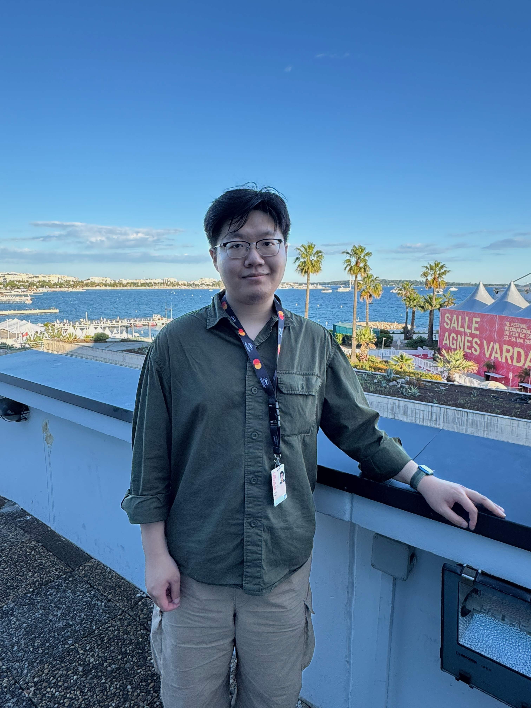

Homepage
Hey 👋 I’m Bohan Yue (岳博涵).
I am currently a postdoctoral research assistant at University of Oxford working with Prof. Matt Jarvis.
I aim to understand the interplay between different building blocks in the galaxy evolution across cosmic times, including AGN, star formation, and the cold gas reservoir that fuels these activities. This can be done through advanced statistical tools that identify patterns buried in noisy datasets. I work with multi-wavelength data including LOFAR , WEAVE , and Euclid .
Get in touch bohan.yue@physics.ox.ac.uk
Research interests
Cosmic evolution of radio quasars
What processes drive the radio emission in quasars? How exactly does `AGN feedback' work? How do these physical processes evolve across cosmic time?
Bayesian statistics and models
A great statistical tool for tracing multiple components in a complicated process, in particular the interplay between AGN and its host galaxy in various physical processes.
Projects
- A new Bayesian method to individually model the host galaxy and AGN contribution in observed quasar radio flux density distribution.
- What is the origin of radio excess in red quasars?
{kind=link}
- A new physically motivated definition of quasar radio loudness that reconciles previous disagreements on the black hole mass dependency of quasar radio emission.
- Quasars hosting most massive SMBHs are more likely to host powerful jets.
{kind=link}
- Does the large scale quasar environment lead to excess in quasar radio emission?
{kind=link}
About me
I was born and bred in Beijing, a city that combines the old and new of China, where traditional culture and international perspectives are always kept in a great balance.
I believe that life extends beyond academia. Over the years I have developed profound interest in the following fields:
- Analogue Photography
- Film
- Indie Music
- Football
- Travelling
You can find more details by following the link below or visit my Douban profile (in Chinese):
{kind=link}

Brief CV
-
2026 - now: Postdoctoral research assistant, University of Oxford
- Data processing and analysis in MIGHTEE survey (Supervisor: Prof. Matt Jarvis)
-
2021 - 2025: PhD in Astronomy, University of Edinburgh
- The role of radio-AGN in galaxy evolution across cosmic time (Supervisor: Prof. Philip Best, Dr. Ken Duncan, Prof. Huub Röttgering)
-
2019 - 2021: MSc in Astronomy, Leiden University
-
Impact of off-centred sources on the JWST NIRSpec spectroscopic
survey (Supervisor: Prof. Marijn Franx)
-
Radio luminosity - star formation rate relation at low frequency with
LOFAR (Supervisor: Prof. Huub Röttgering, Dr. Lingyu Wang)
-
Impact of off-centred sources on the JWST NIRSpec spectroscopic
-
2015 - 2019: BSc in Physics, Peking University
-
Analysis on Broadband Reverberation Mapping Methods Using
Spectroscopic Data (Supervisor: Prof. Xuebing Wu)
-
Analysis on Broadband Reverberation Mapping Methods Using
Research activities
Selected Conference/workshop
- NAM (July 11 - 15 2022, Warwick UK; contributed talk)
- Realising Early Science with WEAVE-LOFAR (May 22 - 26 2023, Leiden NL; workshop)
- AGN Across Continents (July 8 - 12 2024, Durham UK; contributed talk + workshop)
- NAM (July 15 - 19 2024, Hull UK; contributed talk)
- IAU General Assembly (August 6 - 15 2024, Cape Town SA; poster - declined)
- Vasto Accretion Meeting (June 30 - July 6 2025, Vasto IT; contributed talk)
- NAM (July 7 - 11 2025, Durham UK; contributed talk x2)
- SPARCS (Nov 7 - 11 2025, Cairns AU; contributed talk)
- Settling the Dust: Obscured AGN in Galaxy Evolution (July 27 - 31 2026, Leiden NL; contributed talk + workshop)
Teaching
- Physics 1A (UoE 2022 Fall; TA)
- Astrophysics: Stars and Planets (UoE 2022/23 Fall; TA)
- Physics 1B (UoE 2023 Spring; TA)
- Introduction to Astrophysics (UoE 2023 Spring; TA)
- Discover Astronomy (UoE 2023 Fall; TA)
- Observational Astronomy Lab (UoE 2024 Spring; TA)
- Radiative Process in Astrophysics (UoE MPhys 2025 Fall; TA)
Grants and Memberships
- RAS Travel Grant (October 2024; £1,000)
Useful links
If you'd like to know me (or my projects) better, get in touch →
Created based on the Notion template by @joshmillgate
©2026 Bohan Yue